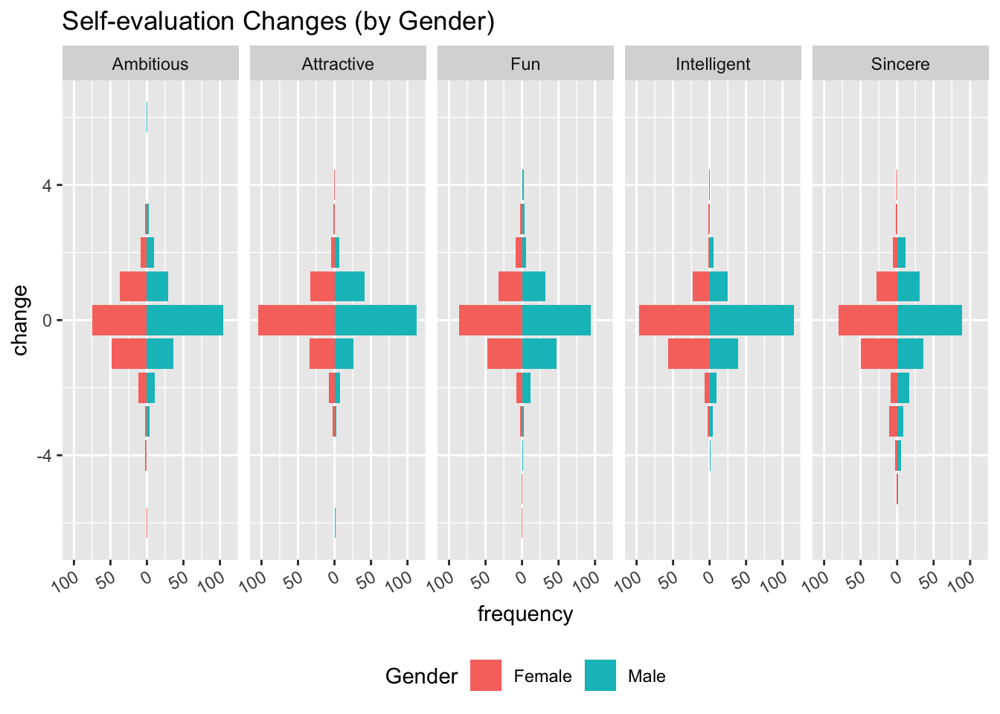

Chapter 5 Results
5.1 Question: Will backrgound and common interests influence the match? Which feature is the most influential?
To answer this question, we have to look at background and common interests seperately. Background includes three features: race, from, and field. We can do so by comparing the chance of matching by conditioning on whether they are from the same race, same from (location), and same field.
Data Cleaning:
we would like to append 6 indicator columns that indicates whether this person and his/her partner share that feature in common (actually 5 because samerace is available in the original data).
# for mosaic plot
# create a clean dataframe for each common feature
sameracedata = speed_dating %>% group_by(samerace, match) %>% summarise(Freq = n()) %>% ungroup() %>% mutate(samerace = if_else(samerace == 1, "Yes", "No")) %>% mutate(match = if_else(match == 1, "Yes", "No"))
samelocationdata = speed_dating %>% group_by(samelocation, match) %>% summarize(Freq = n()) %>% ungroup() %>% mutate(match = if_else(match == 1, "Yes", "No"))
samefielddata = speed_dating %>% group_by(samefield, match) %>% summarize(Freq = n()) %>% ungroup() %>% mutate(match = if_else(match == 1, "Yes", "No"))
samesportsdata = speed_dating %>% group_by(samesports, match) %>% summarize(Freq = n()) %>% ungroup() %>% mutate(match = if_else(match == 1, "Yes", "No"))
samereadingdata = speed_dating %>% group_by(samereading, match) %>% summarize(Freq = n()) %>% ungroup() %>% mutate(match = if_else(match == 1, "Yes", "No"))
samemoviesdata = speed_dating %>% group_by(samemovies, match) %>% summarize(Freq = n()) %>% ungroup() %>% mutate(match = if_else(match == 1, "Yes", "No"))
cat(
paste(
'<script>
var sameracedata = ',toJSON(sameracedata),';
var samelocationdata = ',toJSON(samelocationdata),';
var samefielddata = ',toJSON(samefielddata),';
var samesportsdata = ',toJSON(samesportsdata),';
var samereadingdata = ',toJSON(samereadingdata),';
var samemoviesdata = ',toJSON(samemoviesdata),';
</script>'
, sep="")
)We then look at all the available features that could be of common interest in the dataset, and see if any of those features heavily impacts the chances of getting matched.
calc_diff <- function(x){
tmp <- speed_dating %>% group_by_(x, 'match') %>% summarize(Freq = n()) %>% ungroup() %>% mutate(match = if_else(match == 1, "Yes", "No"))
no_rate <- tmp[2,3]/(tmp[2,3]+tmp[1,3])
yes_rate <- tmp[4,3]/(tmp[3,3]+tmp[4,3])
return(yes_rate - no_rate)
}
cd_df <- do.call(rbind,lapply(paste0('same',colnames(speed_dating %>% select(sports:yoga))),calc_diff))*100
cd_df <- cbind(cd_df, names)
ggplot(cd_df,aes(x=Freq,y=fct_reorder(names,Freq)))+geom_point(color="blue")+ylab("")+xlab("Percent (%)")+ggtitle("Differences in Chance of Matching")